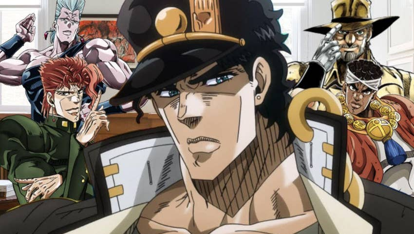

JoJo's Universe
The universe of JoJo's Bizarre Adventure is a reflection of the real world with the added existence of supernatural forces and beings. In this setting, some people are capable of transforming their inner spiritual power into a Stand, which is basically a spirit or demon like entity tied to the master. The master may not even know they are capable of this and will think they are cursed, haunted, or possessed. Another significant form of energy is Hamon, a martial arts technique that allows its user to focus bodily energy into sunlight via controlled breathing. The narrative of JoJo's Bizarre Adventure is split into parts with independent stories and different characters. Each of the series' protagonists is a member of the Joestar family, whose mainline descendants possess a star-shaped birthmark above their left shoulder blade and a name that can be abbreviated to the titular "JoJo". The first six parts take place within a single continuity whose generational conflict stems from the rivalry between Jonathan Joestar and Dio Brando, while the latter two parts take place in an alternate universe where the Joestar family tree is heavily altered.
Why I Love the World of JoJo
I love JoJo's Bizarre Adventure because of the over the top acting and stances, insane, out of left field writing and twists, and awesome art style. There are plenty of references to 80's music bands and artists, which is also amazing. I've only been a fan for a few months, and have only seen the first two seasons, but it's got a hold on me that few other anime series were able to establish!